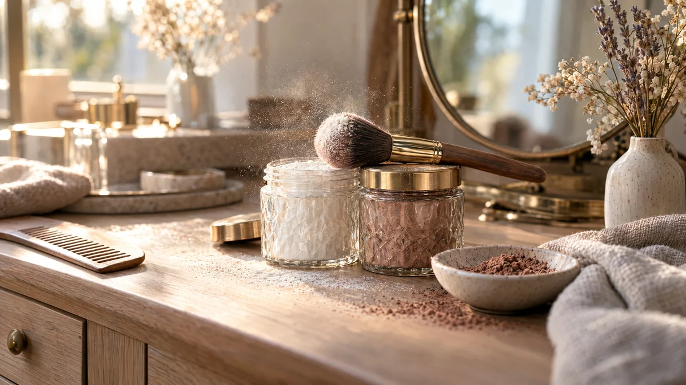

RESTFEST · HEMMASPA
Torrschampo av potatismjöl och kakao
Ett paket potatismjöl och lite kakao. Pulvret pudras på hårbotten med en stor, mjuk borste, suger upp fettet och ger håret lyft och fräschör en dag till. Ett riktigt nödknep, i en vacker burk som får stå framme i badrummet.
- Förberedelse
- 5 min
- Verkningstid
- 5 min
- Räcker till
- ca 10 användningar
- Nivå
- Nybörjare
Bra att veta. Gör ett lapptest innan du provar något nytt: stryk lite på insidan av underarmen och vänta ett dygn.
 Det här behöver du
Det här behöver du
Tryck på + vid det du behöver köpa.
Ljust hår
Mellanbrunt hår
Mörkt hår
Att använda
Gör så här
- Blanda potatismjöl och kakao i en skål tills färgen är helt jämn. Sikta gärna blandningen så att den blir extra fin.
- Fyll pulvret i en liten burk.
- Dela håret i sektioner. Doppa borsten i pulvret, knacka av överskottet och pudra lätt längs hårbotten, där håret är fetast.
- Vänta 5 minuter så att pulvret hinner suga upp fettet.
- Massera hårbotten med fingertopparna och borsta sedan igenom håret ordentligt, tills inget pulver syns.
Presentation och användning
- Fyll pulvret i en kryddburk av glas med strölock, eller en gammal puderdosa.
- Ställ burken och borsten på en liten bricka i badrummet.
- Börja med lite. Det är lättare att lägga på mer än att borsta ur för mycket.
- Fyll en liten dosa till handväskan eller resväskan.
Bra att veta
- Torrschampo ersätter inte hårtvätt. Tvätta håret som vanligt efter en eller två dagar.
- Kakao kan färga av sig på ljusa kläder och örngott. Borsta ur noga.
- Andas inte in pulvret, och pudra inte nära ögonen.
- Använd inte torrschampot på en irriterad hårbotten.